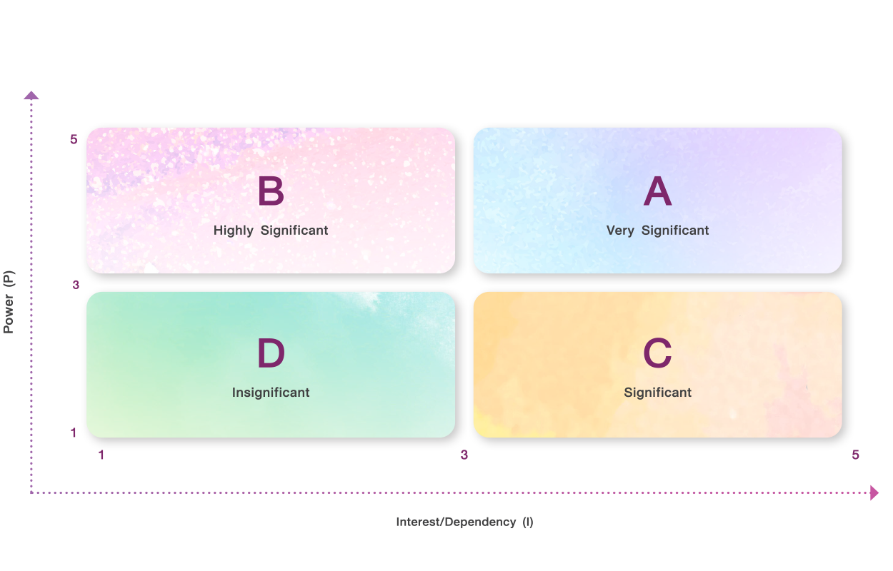
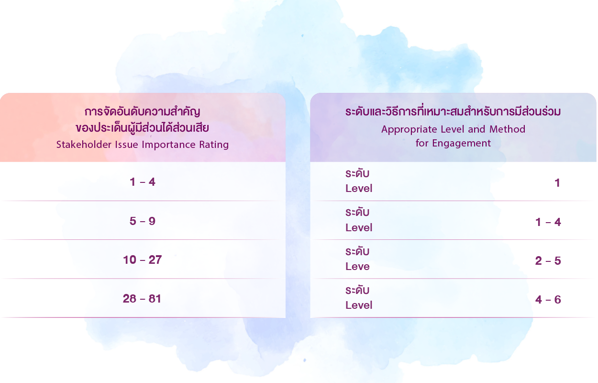
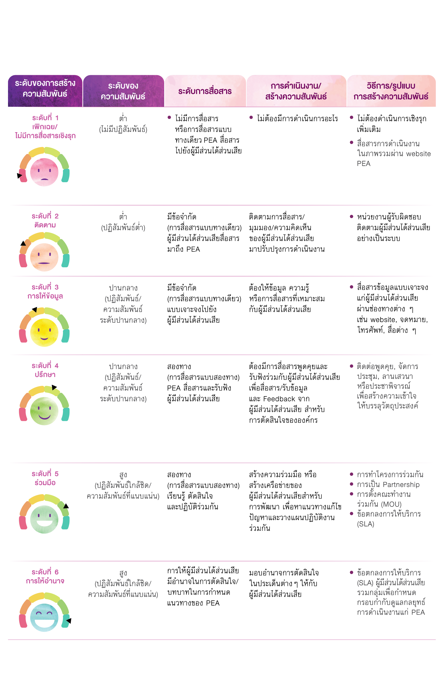
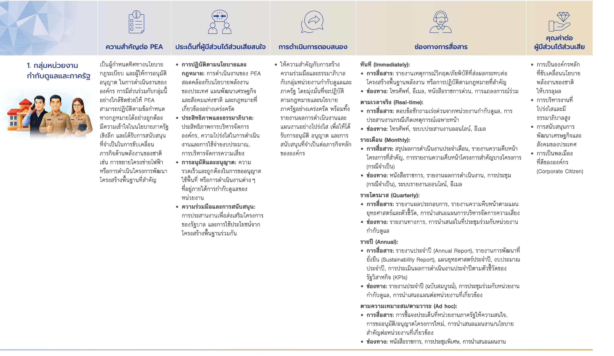
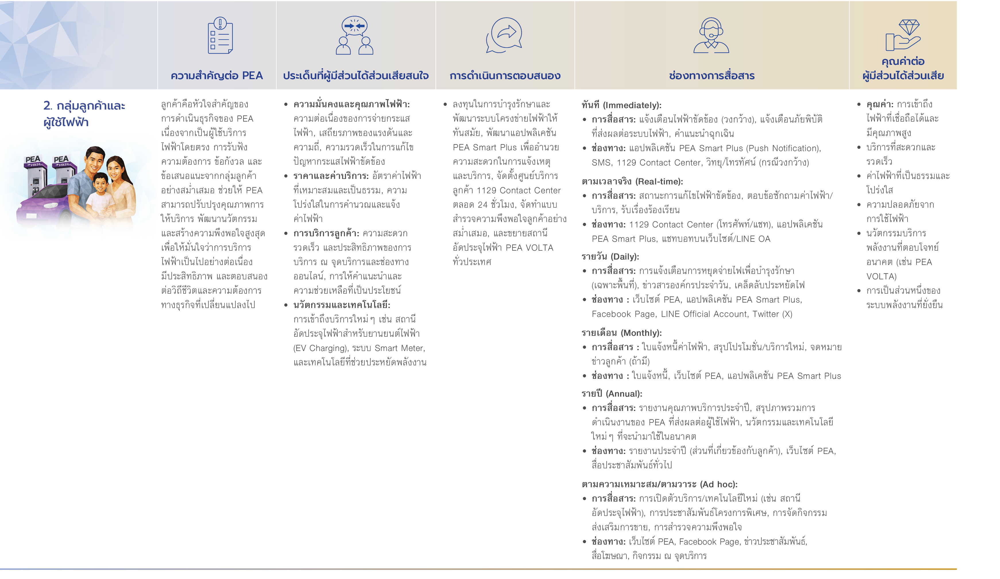
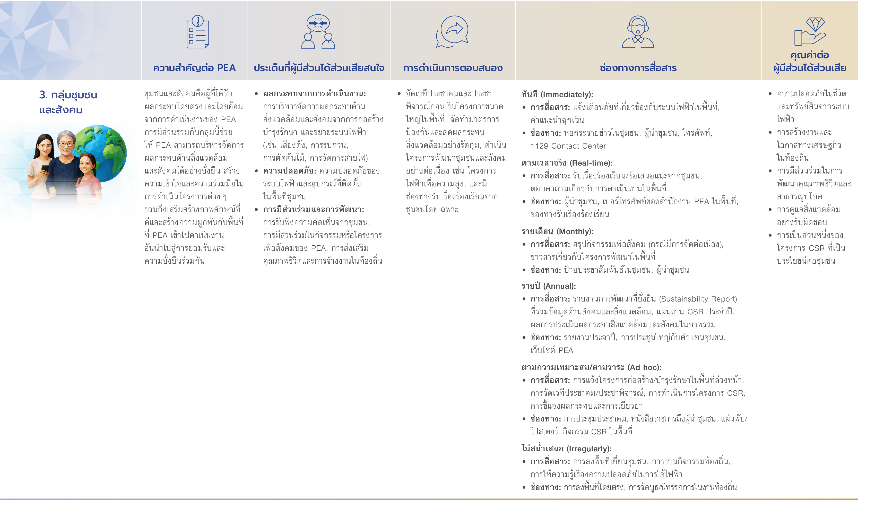
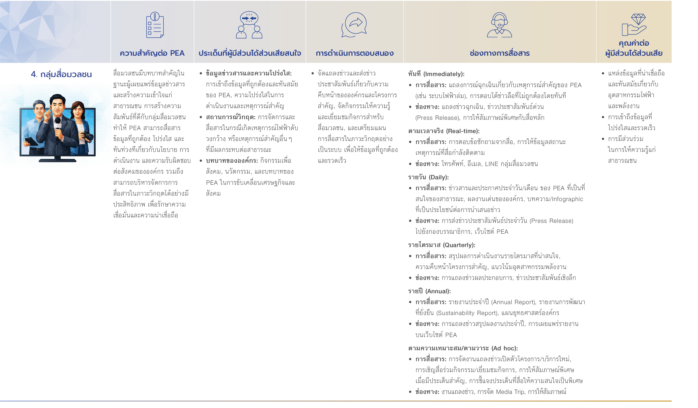

การบริหารความสัมพันธ์ผู้มีส่วนได้ส่วนเสีย
PEA ดำเนินธุรกิจโดยให้ความสำคัญในการดูแลและคำนึงถึงผู้มีส่วนได้ส่วนเสียทุกกลุ่ม ทั้งภายในและภายนอกองค์กร มุ่งเน้นการบริหารผู้มีส่วนได้ส่วนเสียอย่างมีประสิทธิภาพโดยประยุกต์ใช้หลักการภายใต้มาตรฐาน AA1000 Stakeholder Engagement Standard (AA1000SES) และเกณฑ์ประเมินการมุ่งเน้นผู้มีส่วนได้ส่วนเสียและลูกค้า ตามคู่มือการประเมินผลการดำเนินงานรัฐวิสาหกิจ State Enterprise Assessment Model (SE-AM) เพื่อรับทราบความคิดเห็นและข้อเสนอแนะของผู้มีส่วนได้ส่วนเสียต่อการดำเนินงานของ PEA ทั้งภาวะปกติและภาวะวิกฤต ผ่านการสัมภาษณ์ ช่องทางรับข้อเสนอแนะและช่องทางการรับข้อร้องเรียน เพื่อเป็นปัจจัยนำเข้าในการทบทวนปรับปรุงและพัฒนาการดำเนินงานอย่างต่อเนื่อง
การระบุผู้มีส่วนได้ส่วนเสีย(Stakeholder Identification)
PEA ดำเนินการทบทวนกลุ่มผู้มีส่วนได้ส่วนเสียสำคัญขององค์กรเป็นประจำทุกปี โดยกำหนดให้ทุกฝ่ายงานทบทวนผลกระทบและจัดลำดับความสำคัญของผู้มีส่วนได้ส่วนเสีย ตามความครบถ้วนจากกระบวนงาน/กระบวนงานสำคัญ (Key Work Process) จากห่วงโซ่คุณค่าตามสถาปัตยกรรมองค์กร (Enterprise Architecture: EA) ในส่วนสถาปัตยกรรมธุรกิจ (Business Architecture: BA)
ระดับปฏิบัติการ (Bottom up)
จัดประชุมเชิงปฏิบัติการ (Workshop) ร่วมกับทุกฝ่ายงานเพื่อระบุผู้มีส่วนได้ส่วนเสียครอบคลุมทุกกระบวนงานตามสถาปัตยกรรมธุรกิจ (Business Architecture: BA)
ผู้บริหารระดับสูง (Top Down)
สัมภาษณ์ผู้บริหารระดับสูงจากทุกสายงาน/สำนัก เพื่อให้มาซึ่งประเด็นปัญหาในการบริหารจัดการ จุดแข็งจุดอ่อนขององค์กร และมุมมองการให้ความสำคัญกับผู้มีส่วนได้ส่วนเสียแต่ละกลุ่ม
การจัดลำดับความสำคัญของผู้มีส่วนได้ส่วนเสีย พิจารณาจาก 2 มิติ
มิติที่ 1: อำนาจ (Power - P)
| หลักเกณฑ์ | รายละเอียด | แนวทางการประเมิน | คะแนน |
|---|---|---|---|
| P1 | มีอำนาจในการสั่งการ/เปลี่ยนแปลงนโยบาย/ทิศทางการดำเนินงาน/แผนต่าง ๆ วิธีการ หรือกระบวนการทำงาน | ไม่มีอำนาจ/ไม่สามารถดำเนินการหรือแบบไม่มี | 1 |
| P2 | มีอำนาจในการอนุมัติ/เปลี่ยนแปลงงบประมาณ/ทรัพยากรที่ใช้ในงาน | มีอำนาจบางอย่าง/สามารถดำเนินการบางอย่างได้ | 3 |
| P3 | สามารถขัดขวางงาน/เข้ามาในพื้นที่ทำงาน/สามารถทำการที่มีผลกระทบต่อชื่อเสียง | มีอำนาจมาก/สามารถดำเนินการได้อย่างชัดเจน | 5 |
มิติที่ 2: ความสนใจ/การพึ่งพา (Interest/Dependency - I)
| หลักเกณฑ์ | รายละเอียด | แนวทางการประเมิน | คะแนน |
|---|---|---|---|
| I1 | ผู้มีส่วนได้ส่วนเสียจากการทำงาน/การดำเนินงานประจำตามตัวชี้วัด | ไม่มีความสนใจหรือไม่มีผลกระทบเชิงลบ | 1 |
| I2 | มีส่วนได้ส่วนเสียในผลการเงินที่เพิ่มขึ้นหรือลดลง | มีส่วนได้ส่วนเสียหรือมีผลกระทบเชิงลบอาจมีบางส่วน | 3 |
| I3 | ได้รับผลกระทบในเชิงลบจากผลิตภัณฑ์/บริการ | มีส่วนได้ส่วนเสียมากหรือได้รับผลกระทบเชิงลบอย่างมาก | 5 |

การวางแผนการมีส่วนร่วม(Engagement Planning)
PEA นำผู้มีส่วนได้ส่วนเสียที่มีความสำคัญมากที่สุด (Very Significant) สูงมาก (Highly Significant) และสำคัญ (Significant) มาวางความต้องการและความคาดหวังของผู้มีส่วนได้ส่วนเสีย โดยจัดลำดับความสำคัญตามหลักเกณฑ์ ดังนี้
เกณฑ์การจัดลำดับความสำคัญ
เกณฑ์ที่ 1: ระดับความสำคัญของผู้มีส่วนได้ส่วนเสีย
พิจารณาระดับความสําคัญของผู้มีส่วนได้ส่วนเสีย (ประเภท 1-3) ดังนี้
2 = ผู้มีส่วนได้ส่วนเสียประเภท 2 (สูงมาก)
3 = ผู้มีส่วนได้ส่วนเสียประเภท 1 (มากที่สุด)
เกณฑ์ที่ 2: ความสำคัญของกลุ่มผู้มีส่วนได้ส่วนเสีย
พิจารณาจากกลุ่มย่อยของผู้มีส่วนได้ส่วนเสีย โดยมีแนวทางในการพิจารณาความสําคัญของแต่ละกลุ่ม ดังนี้
2 = ผู้มีส่วนได้ส่วนเสียในกลุ่มพันธมิตร (กลุ่มย่อยทั้งหมด) และกลุ่มที่เกี่ยวข้อง
3 = ผู้มีส่วนได้ส่วนเสียที่เป็นพันธมิตรหลักตามแผนกลยุทธ์ของ PEA
เกณฑ์ที่ 3: ความสอดคล้องกับเป้าหมาย/วัตถุประสงค์และขอบเขตการมีส่วนร่วม กับผู้มีส่วนได้ส่วนเสียของหน่วยงาน
พิจารณาความต้องการและความคาดหวังของผู้มีส่วนได้ ส่วนเสียในทั้งสองมิติ ว่าเป็นไปในทิศทางเดียวกับเป้าหมาย/วัตถุประสงค์และขอบเขตการมีส่วนร่วมกับผู้มีส่วนได้ส่วนเสีย ของแผนก/หน่วยงานหรือไม่ โดยมีแนวทางการให้คะแนนดังนี้
2 = สอดคล้องเล็กน้อยกับเป้าหมาย/วัตถุประสงค์หรือขอบเขต
3 = เหมาะสม สอดคล้องกับเป้าหมาย/วัตถุประสงค์ และขอบเขตการมีส่วนร่วมกับผู้มีส่วนได้ส่วนเสียของแผนก/หน่วยงาน
เกณฑ์ที่ 4: ความสอดคล้องกับความต้องการ และความคาดหวังของผู้มีส่วนได้ส่วนเสีย (Materiality) หรือวัตถุประสงค์กลยุทธ์ของ PEA
แนวทางการให้คะแนนพิจารณาความต้องการและความคาดหวัง ของผู้มีส่วนได้ส่วนเสียในทั้งสองด้านการทํางาน/หน่วยงาน ว่าเป็นไปในทิศทางเดียวกับความต้องการและความคาดหวังที่สําคัญของผู้มีส่วนได้ส่วนเสีย (Materiality) หรือวัตถุประสงค์ กลยุทธ์ของ PEA หรือไม่ โดยมีแนวทางการให้คะแนนดังนี้
2 = สอดคล้องเล็กน้อยกับประเด็นความต้องการ ความคาดหวัง
3 = เหมาะสม สอดคล้องกับประเด็นสำคัญ ความต้องการ
โดยการประเมินความต้องการและความคาดหวังของผู้มีส่วนได้ส่วนเสียผ่านเกณฑ์การพิจารณาทั้ง 4 ด้าน จะสามารถทราบระดับและวิธีการที่เหมาะสม (ระดับและวิธีการที่คาดหวัง) สําหรับการมีส่วนร่วมกับผู้มีส่วนได้ ส่วนเสีย ซึ่งข้อมูลจากการจัดอันดับประเด็นของผู้มีส่วนได้ส่วนเสียสามารถสรุปได้ ดังนี้


การมีส่วนร่วมกับผู้มีส่วนได้ส่วนเสีย(Stakeholder Engagement)
ผู้มีส่วนได้ส่วนเสีย 9 กลุ่ม ของ PEA:



